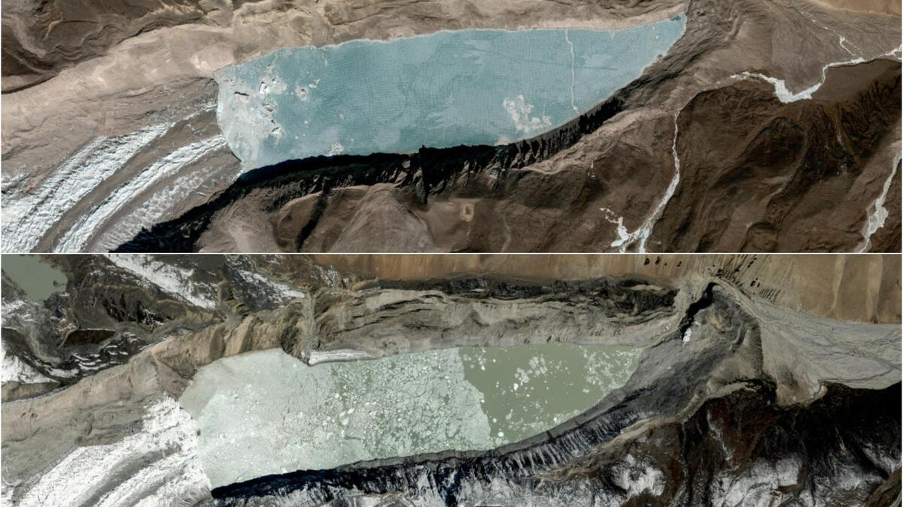
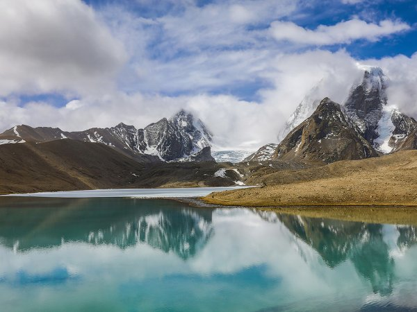
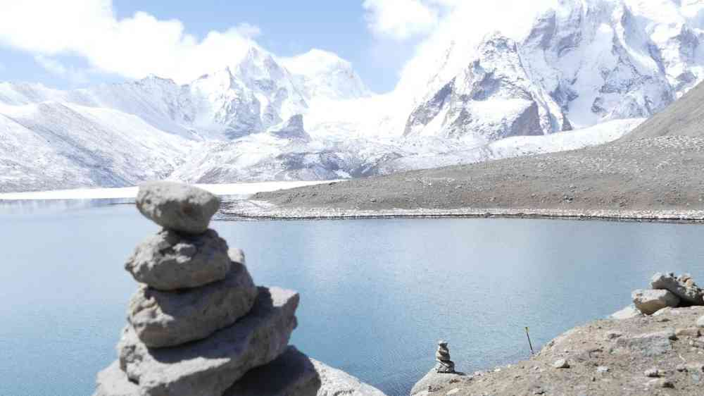

About South Lhonak Lake
What is GLOF?
A Glacial Lake Outburst Flood (GLOF) is a sudden release of water from a glacial lake due to dam failure or glacier melting. It can lead to catastrophic downstream flooding.
South Lhonak Lake Monitoring System
South Lhonak Lake is a glacial lake located in Sikkim, India. It is considered one of the most hazardous lakes due to its growing size and unstable moraine dam. Monitoring and early warning systems are essential to prevent disaster.



Recent News
[2023] Overflow scare triggers mass evacuation in North Sikkim.
ISRO satellites continue monitoring South Lhonak Lake changes.
Government funds AI-based flood prediction system for the region.